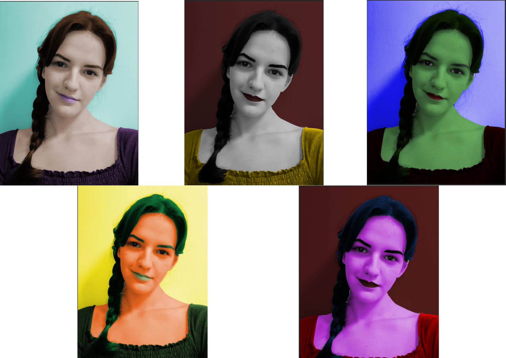
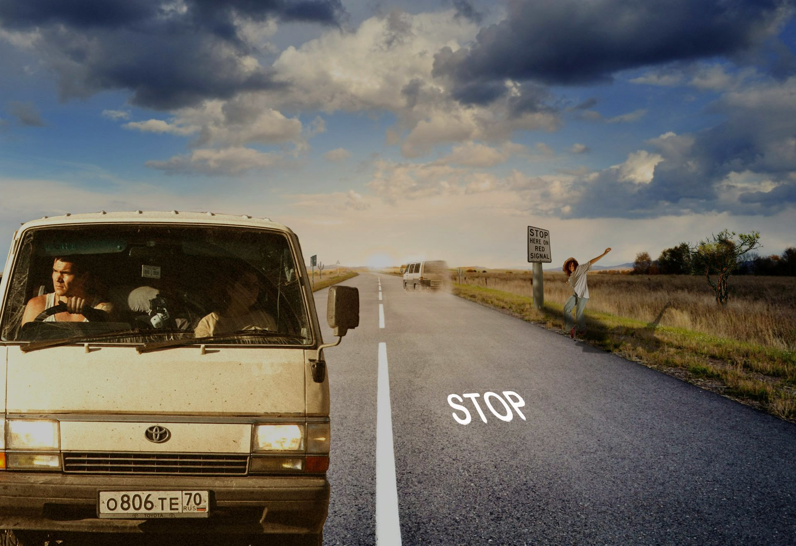
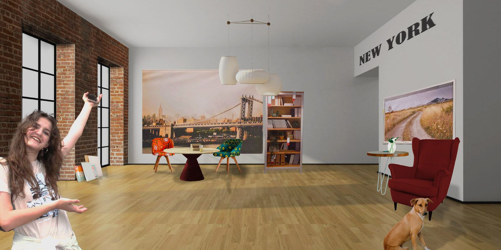

U trećoj vježbi morali smo savladati elemente kopiranja i zrcaljenja.Crtali smo razne oblike te smo morali prekopirati neku sliku obrubljujući ju.
Vjezba4U četvrtoj vježbi također smo precrtavali sliku s određenog predloško no ovoga puta smo posebno obračali pažnju na realističnost i detalje poput sjenčanja i svjetlosti.
Projektni zadatakU PROJEKTNOM ZADATKU morali smo pokazati znanja iz svih prijašnjih vježbi te sve to ukopmonirati u novi rad. Ja sam dobila sliku flaminga te smo trebali što realističnije prikazati elemnte posebno obračajući pažnju na to kako imenujemo razne datoteke.
U petoj vježbi učili smo retuširati sliku te "ulijepšavati" danu sliku lica. Koristili smo kloniranje kako bi prekrili velike neujedačenosti te bi koristili laso za nekakva obrezivanja.
U šestoj vježbi učili smo koloriranje te nam je bio zadatak da promjenimo boje majce, kose itd. Koristili smo maske kako bi dobili taj efekt te bi izrezivali svaki dio kao zasebnu cjelinu te bi promijenili boju.
U sedmoj vježbi je bilo najbitnije naučiti kako realistično zaljepiti jednu sliku na drugu.Odnosno izrezati je i obraditi kako bi najbolje izgledala uz dobivenu bazu. Koristili smo sjenčanje, lasso, bojanje, maske, transparency i mnoge druge elemente koji su nam pomogli,
U drugom PROJEKTNOM ZADTKU se provjeravlo koliko smo usvojili vještina u photoshopu. Dobili smo 50 slika od kojih smo trebali izabrati 10 te zalijepiti na sliku koja nam je služila kao baza. Opet je cilj bio da slika izgleda što realističnija.
Naučili smo kako obrezivati video, dodati zvuk, stavljati razločite efekte prijelaza poput ljevo-desno ili gore-dolje,te također animirati tekst na sličan način.